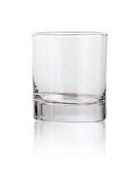

Si en casa se encuentra una persona o familiar y tiene posibilidad de tomar video mientras
realizas tu actividad, te servirá para que posteriormente te observes y mejores algún ejercicio si se te llegara a dificultar.. Estación 1 : Coloca 8 vasos, conos, objetos o botellas de forma lineal con espacios de cm. aproximadamente entre cada uno; Durante 3 minutos pasarás entre ellos con trote ligero. Estación 2 : Con los 2 pies juntos y
sin despegar uno del otro, brincarás entre cono y cono de ida y vuelta durante 3 minutos.